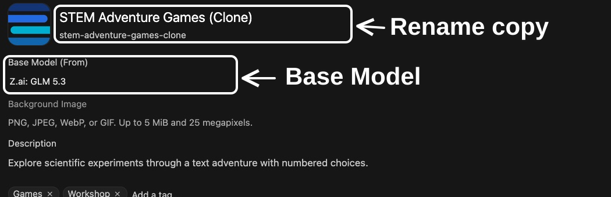
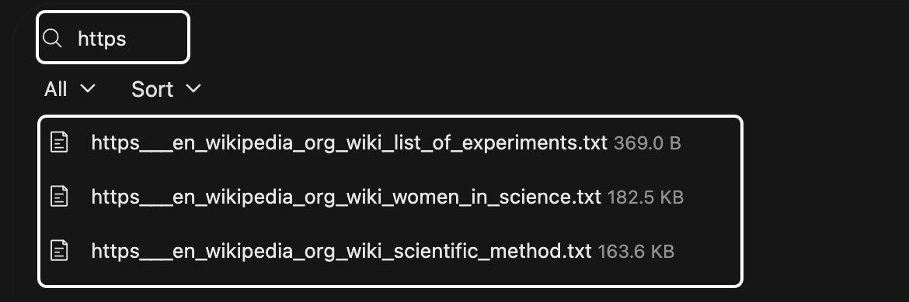
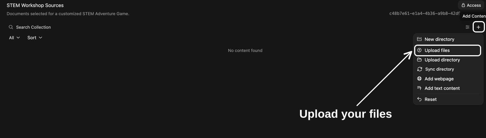
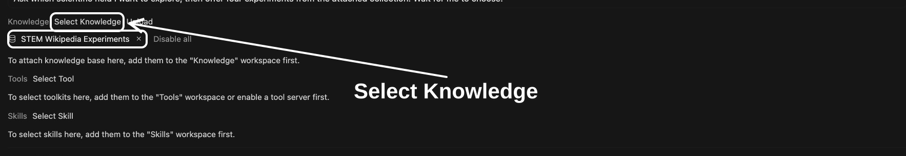
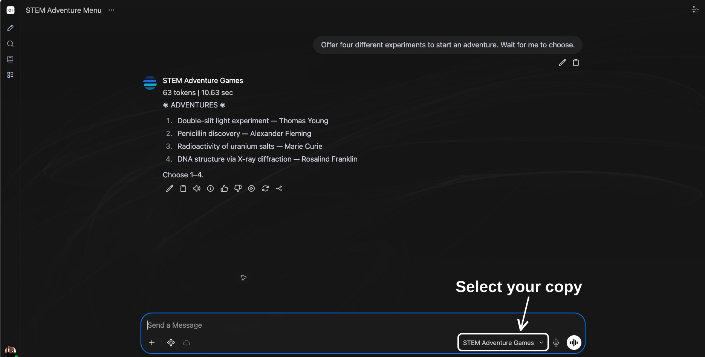
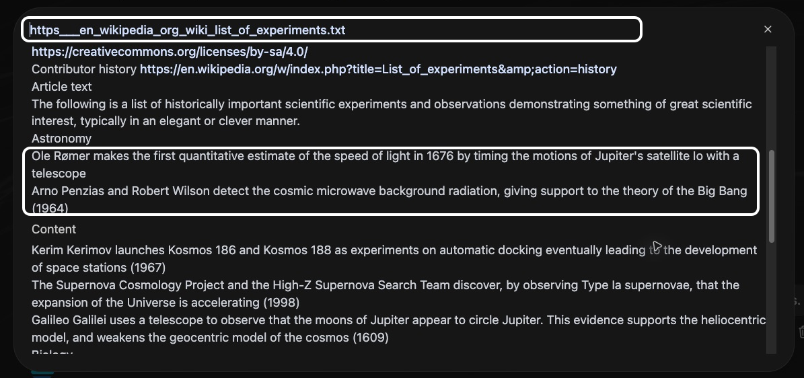

Curating knowledge collections
Led by Zach Muhlbauer and Meha Gupta
New Media Lab · Room 7388.01 CUNY Graduate Center
Thursday, October 1, 2026 2:30–4:00 p.m.
Workshop Agenda
-
Choose and clone models · 15 minutes
-
Select new sources · 25 minutes
-
Create and populate collections · 20 minutes
-
Revise system prompts · 10 minutes
-
Test and revise · 20 minutes
Requires individual access, Sandbox sign-in, Workspace and Knowledge access.
Retrieval-Augmented Generation
A Knowledge collection contains documents your model can search.
Retrieval-augmented generation (RAG) combines information retrieval with text generation. Relevant passages are retrieved from external sources and added to a model’s context. Your model uses those passages with your request and system prompt instructions to generate a response.
Search sources → Retrieve passages → Generate response
Open WebUI Knowledge https://docs.openwebui.com/features/workspace/knowledge/
Choose Your Model
Follow STEM Adventure Games, or choose Compare Wikipedia Edits. Work with one model throughout.
Teaching
STEM Adventure Games
Explore scientific experiments through a text adventure with numbered choices.
Research
Compare Wikipedia Edits
Compare Wikipedia revisions and examine changes in wording, claims, and citations.
Clone Your Model

Select Workspace in left sidebar, then Models. Search for your chosen example. Open ⋯ beside it and select Clone.
Name Your Copy

Give your copy a unique name and model ID. Base model, system prompt, and settings carry over when you clone.
Scroll to bottom and select Save & Create.
Try Your Model
For STEM Adventure Games, select Start an adventure. Choose from four experiments and try its numbered choices. Ask for another menu to explore new options.
For Compare Wikipedia Edits, ask “Retrieve three recently edited Wikipedia articles with dates and links.” Choose an article to compare.
Example Sources

Original STEM Adventure Games uses List of experiments for options, Scientific method for experimental choices, and Women in science for historical context.
Your version will draw on sources you choose.
Choose Your Sources
Choose a topic for your version of STEM Adventure Games. Select two or three documents about experiments, methods, or historical context you want it to use.
Save source text as PDF, Markdown, or plain text. Include titles, links, and dates. Uploaded documents preserve saved versions.
For Compare Wikipedia Edits, choose an article and save two revisions with their IDs and links.
Create Your Collection

Select Workspace → Knowledge → Create. Name your collection and describe what your sources cover.
Keep access Private and select Create Knowledge.
Upload Your Sources

Your new collection starts empty. Select Add Content → Upload files and upload documents you prepared.
Wait for processing, then open each file to check text and source links.
Attach Your Collection

Open your cloned model in Workspace → Models. Under Knowledge, remove any inherited collection attachments, then select your own collection.
Continue to System Prompt in this editor.
Revise System Prompt
Replace original source list with filenames you uploaded. Explain how each document should guide your game.
-
Purpose · Name your chosen topic.
-
Procedure · Use your sources to develop scenes and choices.
-
Constraints · Require source support for historical details.
-
Format · Preserve brief scenes and four numbered choices.
For Wikipedia, name saved revisions, specify changes to compare, and retain Before/After quotations.
Select Save & Update.
Test Your Model

Start a new chat. Select model ID on bottom right of message box. Choose your copy.
Ask for four experiments about your chosen topic. Choose one, then ask “Which passage supports this scene? Quote it and cite your source.”
For Wikipedia, ask “Use saved revisions in my attached collection. Compare one change and quote both passages.”
Check Citations

Select a citation to inspect its source.
-
Does quoted text match your document?
-
Does it support your model’s interpretation?
Compare Responses
Use one request with original model and your copy. For STEM, choose one experiment for both. Compare how each uses source documents.
-
What changed with your sources and instructions? For STEM, check scenes and experimental choices.
-
What did your model miss or misinterpret?
Revise and Retest
Change one source document or system prompt instruction based on what you observed, then repeat your request in a new chat.
If your model misses a source, check that its file finished processing, your collection is attached, and instructions name your new documents.
Share Your Model
To share your work, grant intended users or groups Read access to both your model and its collection.
Ask someone to try your model and check its citations.
Sandbox Roles & Permissions https://ailab.gc.cuny.edu/sandbox-docs/roles-permissions/
Workshop Resources
Choose another experiment or article. Refresh source documents when needed and check responses against versions you saved.
Workshop Materials
-
Review Composing system prompts https://cuny-ai-lab.github.io/sandbox-series/index.html
-
Consult Sandbox Knowledge documentation https://ailab.gc.cuny.edu/sandbox-docs/knowledge-bases/
-
Consult Open WebUI Knowledge https://docs.openwebui.com/features/workspace/knowledge/
-
Check monthly usage https://tools.ailab.gc.cuny.edu/model-access